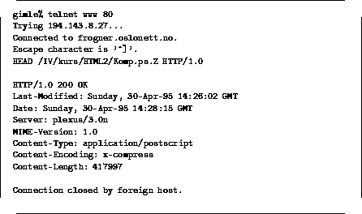
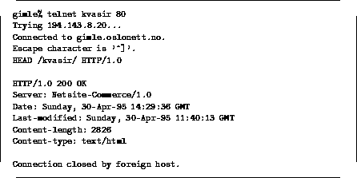

Gjør det samme som GET, men returnerer ikke datadaelen, bare HTTP
headerne. HEAD brukes ofte av roboter og skript for å sjekke
siste oppdateringsdato av et objekt. Se figur  og
for to eksempler, og legg merke til haderne som skrives
ut av HTTP tjeneren.
og
for to eksempler, og legg merke til haderne som skrives
ut av HTTP tjeneren.
